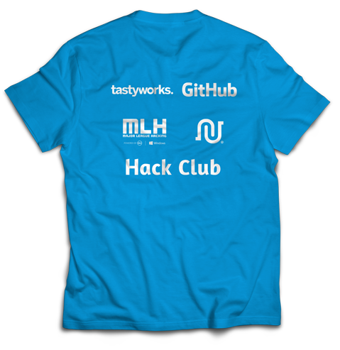

Chicago Hacks
January 2017 - May 2017
Building Chicago’s First High School Hackathon
In January of 2017, a few friends and I decided to organize Chicago’s first high school hackathon in attempt to bring Computer Science education to those in the Chicagoland area and get students excited for programming. The event was successful, with over 130 attendees, 30 projects submitted, and 25 sponsors.
This is going to be a case study of the website I built and designed for the event. For more about the actual event, you can check out my post here.
The Theme of Chicago Hacks
We wanted to do a good job of branding our event, keeping our graphics and general theme very consistent across the board to make sure we left an impression on anyone who interacted with our content. We ended up deciding to use a light blue with color hex #03A9F4 for our main accent color, with the common neutral palette and then a dark purple for use with gradients.
For the site we wanted to follow a flat design format, with lots of white and minimalistic layouts. Nothing too complicated.
Poppins font in Normal and Bold font-weights.
The font of the website would need to fit well with the flat design layout. Some of the candidates were Roboto (Google’s favorite font), Open Sans, and Poppins. I ended up choosing Poppins due to the fact that it was rather unique and was a very good bold font for headings. Poppins is a sans-serif font with a very thin body style and a very thick bold style.
Designing the Logo

I was tasked with designing the logo along with the website. We had already selected a primary color for all of our designs. So I chose to go for a blue background for the graphic. The primary element of the element was the word ‘CHI’ which was a graphic generated from scratch through CSS dividers and absolute positioning.
I went for a geometric font look, with straight triangle edges. I could not find a font near what I wanted, so I just created my own for those three letters. I added some shadowing for blending with the background by segmenting the letters. I chose to do this to add some depth and sophistication to the logo.
The ‘2018’ and ‘HACKS’ part were just rendered using the Segoe UI font in Photoshop in black font-weight.

We also used this graphic for the t-shirt, and then also put some of our high tier sponsors on the back.
Building the Header
On a Hackathon’s website, the header is going to be one of the most important elements. It needs to grab the attention of the visitor in hopes of getting them interested in the event, and hopefully sign up.
The overall theme among different Hackathon websites is using very bright colors. I decided to use a photo of Chicago for the background, with a gradient overlay to make it more colorful. It combined some of the geography of our Hackathon with a very vivid gradient to bring more color to the header.

I also added a parallax scrolling effect to the homepage. It is a subtle but noticeable effect that just adds sophistication to the page without sacrificing any performance.
The About Section
The about section needed to provide any information on a hackathon/our event that was needed. This is a rather new type of event for most high schoolers, so we did not expect them to know what the aim of our event was. So with this, it was crucial we added an about section.
We also put the event details in this section, hoping to eliminate any confusion at all, with embedded Google Maps directions and the street address just in case. This was more of a UX decision, where there is an option for Google Maps along with a fallback to a simple street address.
The FAQ Section
There were lots of different questions that could be asked about our event, and to cover them all, I needed to display 11 different questions and the answer to them in a compact fashion.
I found that a 3 column grid perfectly solved this solution. The answers were not long enough to span the entire width of the page, or even just half.
The design consisted of a card system that simply just displayed the different questions. They were white and had a very subtle box-shadow to get the cards to stand out from the background.

The Schedule Section
The schedule section was very straightforward. Two days, two columns of events. I styled the boxes to contain one event, with the time and event displayed. Any workshops were marked in red.
The Sponsor Section
For the sponsor section we just needed to display all of our partners in a grid system. We had three tiers of sponsors, partners, high paying sponsors, and lower paying sponsors. I communicated the different tiers through the size of the logo.

I needed to use some advanced CSS styling to keep all the logos the same width and centered properly considering the different sized logos. Some were wide, some were tall, and I had to constrain them to keep the integrity of the grid.
Building for Mobile
Building for mobile is always going to be hard when you have a page as long as ours. I needed to find a way to deliver all this content on a phone where scrolling to the bottom doesn’t give your finger a cramp. So I needed to cram all the same content into a shorter webpage than what I had.
I ended up doing a lot of resizing of elements, eliminating any unnecessary spacing or margins within the site. This reduced the size of the page by about 50% after all was finished.
Conclusion
The site was definitely a difficult thing to create, with a lot of custom graphics and difficulty making sure the site was scaleable. There was a lot of trouble getting the webpage length down in order to increase conversions, but with some work, I was able to decrease the bounce rate by a lot. We got over 10k page views and 6k unique visitors to our website leading up to the event, with a bounce rate of only 72%. The average page visit duration was about 1 minute, with a median duration of 3 minutes, which tells us that most page views that were substantial usually led to them reading more into the event or signing up.
The website worked. We had over 250 signups and over 130 attend the event in May. I hope to make an even more effective website for the Chicago Hacks 2018 to have an even more successful event.